URL Routing and Template Rendering
Table of Contents
1 Compojure 란?
- 하이레벨 웹 어플리케이션 프레임워크 (or 라이브러리)
- 핸들러 메서드를 작성하기 쉽게 해준다.
- HTTP Method A 로 URL B 를 요청하면 Clojure function C 를 실행해라.
2 실습 : Compojure route 만들기
- home.clj 파일을 연다.
- home-routes 에 req 를 추가한다.
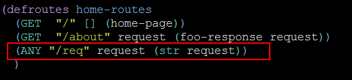
- Ring Server 를 시작한다. (lein ring server)
- http://localhost:3000/req 로 접속해본다.
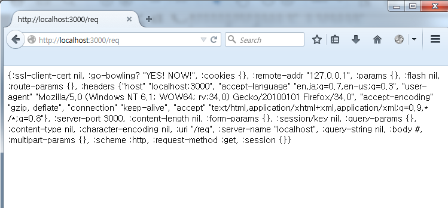
3 defroutes 사용하기
- defroutes 는 매크로
- 실행되면 등록된 모든 routes 를 모아서 그 것들을 처리하기 위한 하나의 큰 Ring handler를 만들어 준다.
- test_routes 를 추가해보면서 이 메커니즘을 이해해보자.
3.1 실습 : test_routes 추가
- /hipstr/routes/test_routes.clj 를 만들고 네임스페이스 설정을 추가
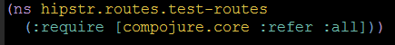
- defroutes 매크로를 사용해서 새로운 route를 생성
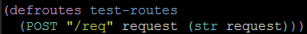
- handler 네임스페이스에 test-routes를 추가 (handler.clj)
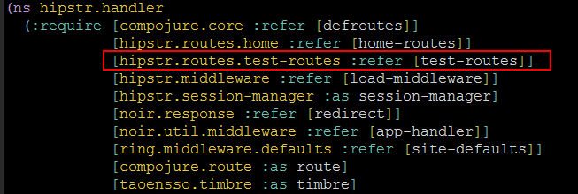
- app에 test-routes를 추가해준다. (handler.clj)
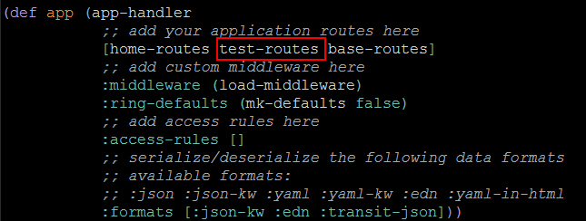
4 route 해부학
4.1 route의 구조
[HTTP_METHOD] [URL] [Request & PARAMETER] [Response] ; 문법 ANY "/req" request (str request)) ; 예
- ANY는 모든 HTTP METHOD에 대해 동작한다는 의미
- "/req"는 해당 URL (주의할 점은 뒤에 슬래시를 붙이면 잘 동작하지 않는 경우가 많다는 것)
- 세번째는 리퀘스트 및 파라메터
- 네번째는 응답
4.2 파라메터 구조분해(destructuring) 하기
- 컴포저의 구조분해 문법은 HTTP 요청 파라메터를 같은 이름의 변수명에 바인드해 준다.
- 예를 들어, 다음 예에서 :val 은 요청의 :params 맵이 된다.
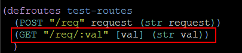
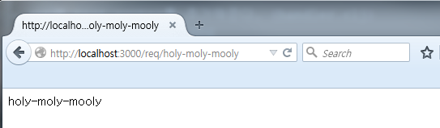
4.2.1 쿼리 스트링 포함하기
새로운 경로 (GET "/req/:val" [val more] (str val "<br>" more)) 를 추가하고 기존의 경로는 주석처리한다. (주석처리 하지 않으면 동일한 URL이므로 위의 경로가 적용된다.)
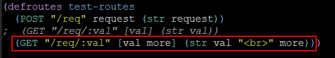
파라메터 중에서 이름이 more인 것이 있으면 다음과 같이 응답에 출력해준다.
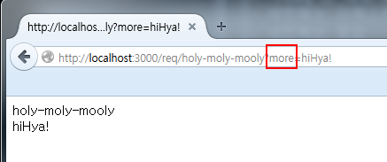
4.3 요청(request)을 구조분해 하기
- 요청자체에 접근하고 싶을 때는?
- :as 를 사용한다.
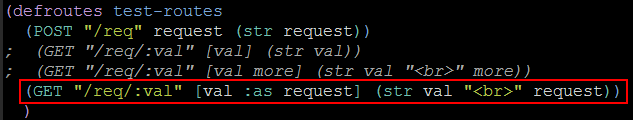
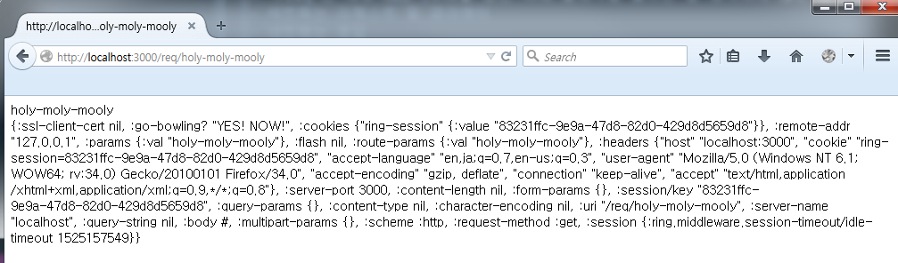
4.4 파라메터의 잔여부분 참조
- 파라메터의 잔여부분은 & 를 이용해서 참조할 수 있다.
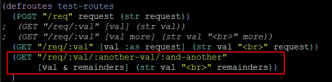
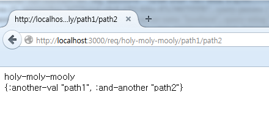
4.5 response 만들기
- 응답에는 str함수뿐만 아니라 다양한 클로저 함수를 사용할 수 있다.
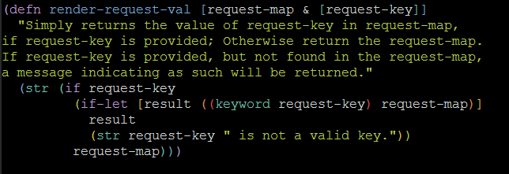
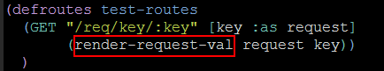
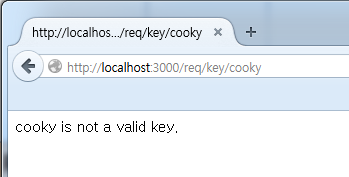
Figure 17: 존재하지 않는 키인 경우

Figure 18: 존재하는 키인 경우
키가 주어지지 않은 경우
4.6 복잡한 response 만들기
- 복잡한 응답을 만들어 내기 위해서 Selmer가 필요하다!